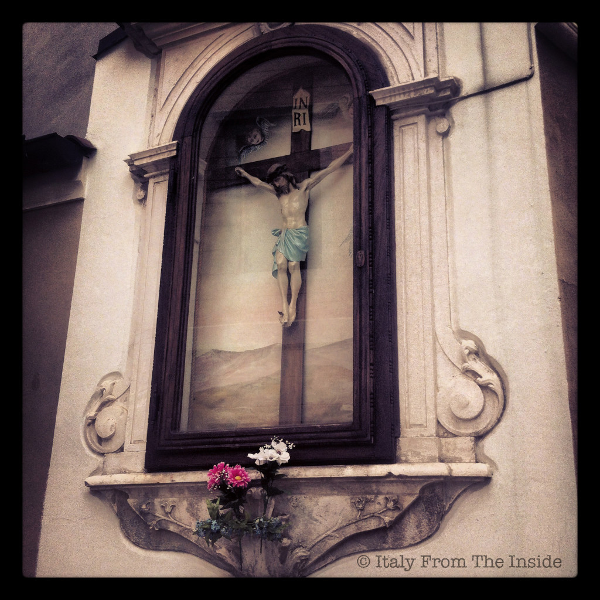

Since Italy is a catholic country, it's no wonder that there are so many symbols of devotion scattered throughout the cities and in the countryside, and even though most of them were built in the past century, they are still taken care of with much attention. Some people bring flowers and leave coins for the poor, while others say a prayer thinking of their loved ones.